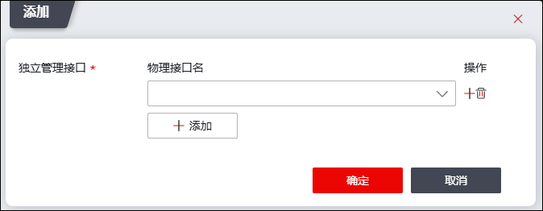
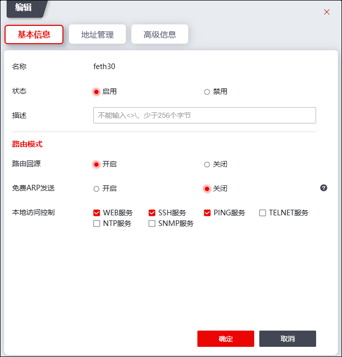

NGFW默认支持带内管理模式，通过“独立管理”功能可实现支持带外管理模式，带内和带外管理方式说明如下：
Ø带内管理：是指网络的管理控制信息与用户网络的承载业务信息通过同一个逻辑信道传送。NGFW带内管理模式下，必须通过网络访问NGFW，当网络出现故障中断时数据传输和远程管理都无法正常进行。
Ø带外管理：是指网络的管理控制信息与用户网络的承载业务信息分别在不同的逻辑信道传送。带外管理模式下，由于控制信息与数据信息不在同一通道，即便网络系统发生故障时，用户可以通过这台独立的管理控制信息通道来对NGFW进行管理维护。
“独立管理”是为了实现管理流量和业务流量处理分离而开发的功能。独立管理是通过专门的网管通道实现对网络的管理，将网管数据与业务数据分开，为网管数据建立独立通道，可以提高网管的效率性与可靠性，也有利于提高网管数据的安全性。
Ø带内管理模式下，由于NGFW默认支持带内管理模式，管理员无需将接口添加的“独立管理”功能菜单中，接口作为管理接口同时可作为业务接口。
Ø带外管理模式下，需要将接口添加到“独立管理”功能菜单中，独立管理接口只能作为管理接口。NGFW的独立管理路由和业务路由分离，都有各种的路由表项，二者互不干扰。独立管理路由表项的配置必须在命令行界面中配置（#network route-indep-mgmt...），业务路由表项则可在WEB界面中配置，也可在命令行界面中配置。
配置独立管理功能的操作步骤如下：
| 步骤1 | 选择 。 |
| 步骤2 | 添加独立管理接口。 |
1）点击『添加』，弹出如下图所示窗口。

各项参数的具体说明如下表所示。
参数 |
说明 |
|---|---|
物理接口名 |
在下来框中选择接口，设置该接口为独立管理接口。 说明：下拉框中仅显示工作在路由模式下的物理接口，且该物理接口没有设置子接口、聚合接口、虚拟线、接口联动功能。 |
2）参数设置完成后，点击【确定】按钮可将物理接口添加到“独立管理”菜单中。
| 步骤3 | 设置独立管理接口属性。 |
选中独立管理接口列表，点击列表上方的『编辑』，可以设置独立管理接口的基本信息、地址信息和高级信息。如下图所示。

|
²配置独立管理接口WEB、SSH、PING、TELNET、NTP和SNMP服务的功能包括：独立管理 和 本地服务，两者相互依赖，任一功能模块没有开启相应服务，NGFW的独立管理接口该服务处于关闭状态。 ²开启独立管理接口服务的具体配置：1）选择 ，编辑独立管理接口时勾选“本地访问控制”参数的服务，详见本节内容；2）选择 ，开启相应服务，详见 本地服务。 |